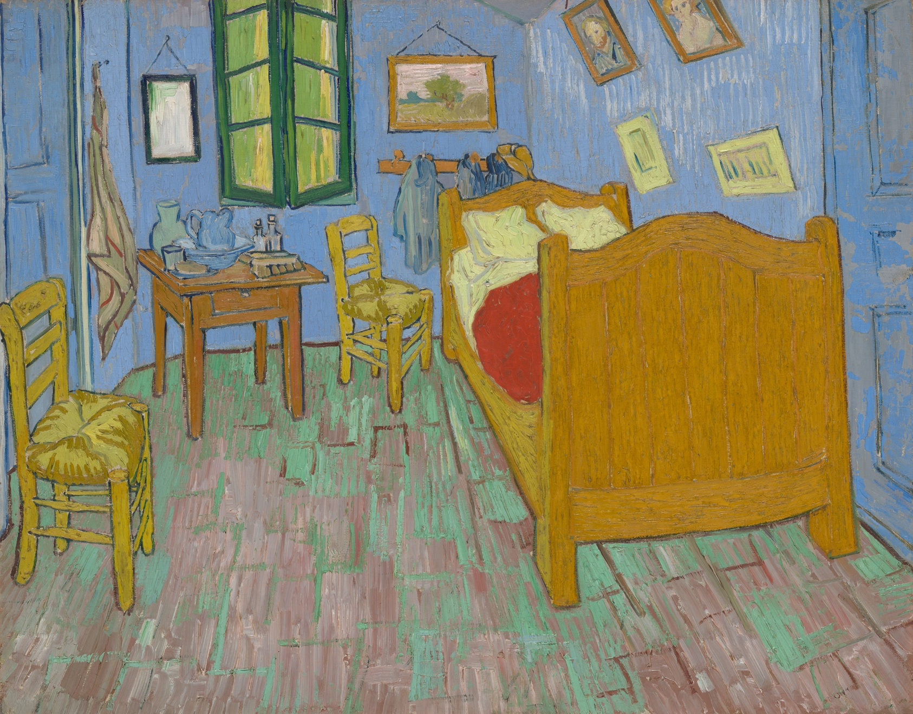
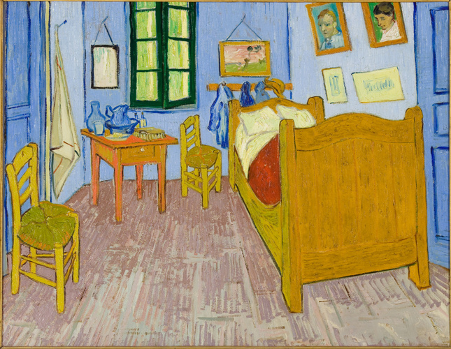

由 Tia 与 Claude 共同创作 · Created by Tia with Claude
画作图片：Wikimedia Commons，公有领域 / Images: Wikimedia Commons, public domain
画作图片：Wikimedia Commons，公有领域 / Images: Wikimedia Commons, public domain
从这里看，就是画里的样子。From here, you see what the painting sees.
保存图片 Save
手机上也可以长按图片保存 On phones, long-press to save
1888年10月 · 阿姆斯特丹梵高博物馆October 1888 · Van Gogh Museum, Amsterdam
1888年秋，梵高租下阿尔勒的黄房子，梦想在这里建立画家们共同生活的"南方画室"。他画下自己的卧室，等待高更到来。
In autumn 1888, Van Gogh rented the Yellow House in Arles, dreaming of a "Studio of the South" where artists would live together. He painted his bedroom while waiting for Gauguin.

1889年9月 · 芝加哥艺术博物馆September 1889 · Art Institute of Chicago
高更来了，但两个月后，两人激烈争吵。梵高精神崩溃住进医院，高更离开了阿尔勒。这幅画后来也在他住院期间受潮损坏。
Gauguin came, but two months later they quarrelled violently. Van Gogh broke down and was hospitalised, and Gauguin left Arles. The painting was later damaged by damp while he was in hospital.

1889年 · 巴黎奥赛博物馆1889 · Musée d'Orsay, Paris
1889年，梵高自愿住进圣雷米的疗养院，在那里重画了这间卧室两次，较小的一幅送给母亲和妹妹。那时，他已经不住在这里了。
In 1889, Van Gogh entered an asylum in Saint-Rémy, where he painted the bedroom twice more, the smaller one for his mother and sister. By then, he no longer lived there.